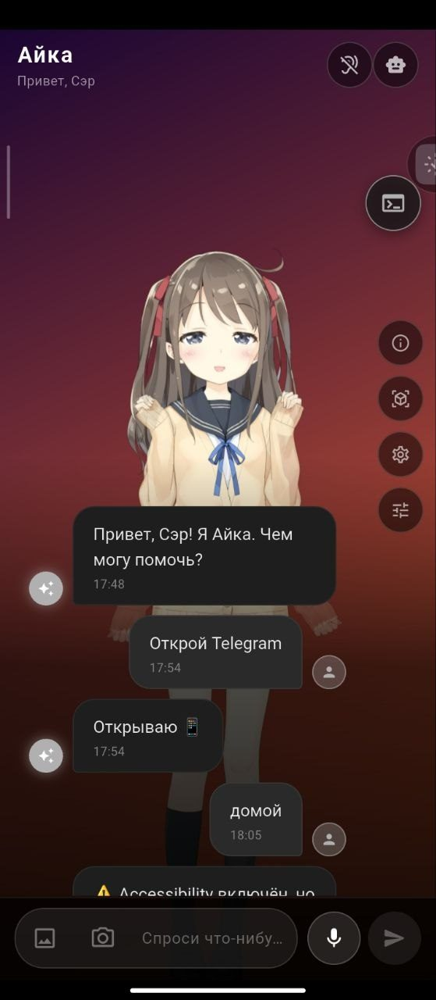
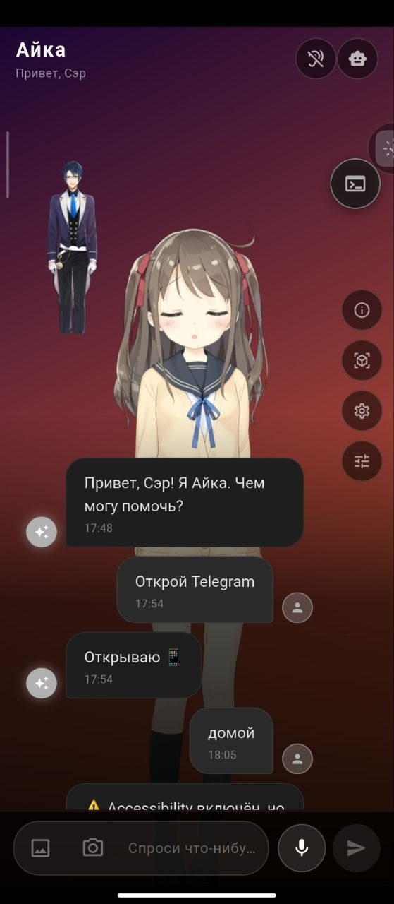
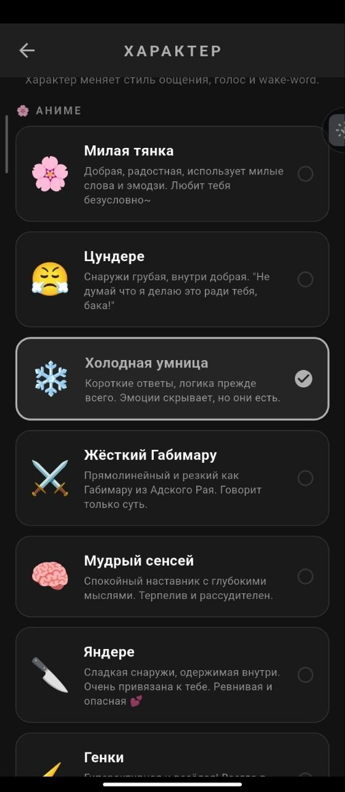
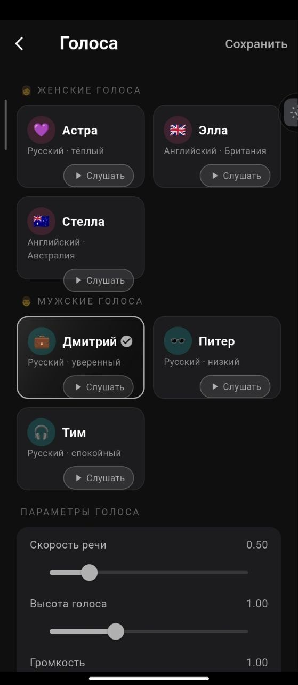
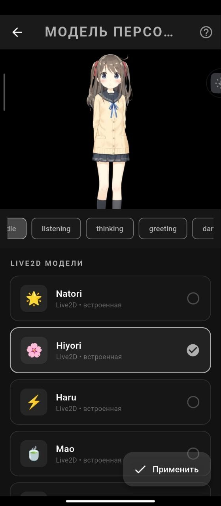
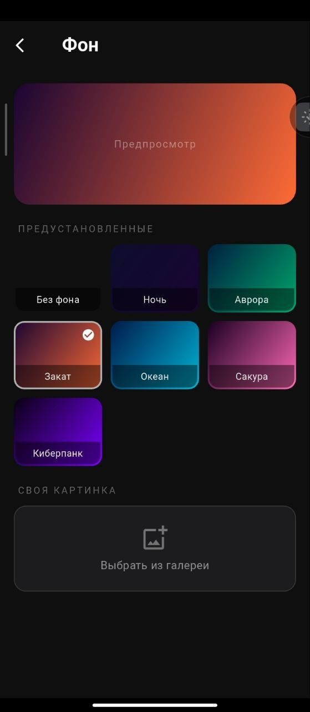
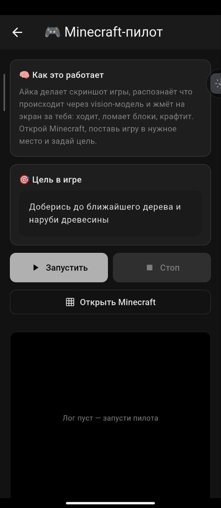

Обычный чат, только живой
Пишешь Айке как другу в мессенджере — она отвечает. Можно говорить голосом вместо набора текста, она услышит.
Отправишь ей фото или картинку с камеры — она посмотрит и расскажет, что на ней. И да: она сама говорит вслух, читать не обязательно.

Висит поверх всего
Айку не нужно держать открытой. Она плавает поверх любых приложений: смотришь видео, листаешь соцсети, играешь — она остаётся на экране рядом.
Её можно перетаскивать пальцем, куда захочешь. Убрать — одним движением.

Выбери ей характер
Милая и ласковая? Колючая цундере, что ворчит, но помогает? Холодная умница или даже яндере?
Персонажей много, и от выбора зависит, как Айка с тобой разговаривает: каким тоном отвечает, что шутит и как себя ведёт. Надоел один — смени в любой момент.

Голос на твой вкус
Несколько голосов на выбор: женские и мужские, русские и английские. Каждый можно послушать прямо перед выбором.
Не нравится скорость речи или высота голоса? Подкручивается ползунками за секунду.

Разная внешность
Несколько готовых персонажей — каждый со своим лицом, одеждой и характером движений.
Они не картинки: персонажи моргают, дышат, двигаются. Ведут себя живо, пока ты с ними общаешься.

Фон под настроение
Чат можно оформить: готовые фоны — закат, океан, сакура, киберпанк и другие.
Хочешь своё? Ставь любую картинку из галереи телефона.

Сама играет в Майнкрафт
Говоришь Айке, что сделать — например, «наруби дерева» или «прокопайся вниз». Дальше она смотрит на экран игры и играет за тебя: ходит, ломает блоки, выполняет цель.
Панель управления висит прямо поверх игры. Телефон можно просто положить и смотреть, как она справляется.
Хочешь такую же
Айка ждёт на маркете. Оплата один раз, доступ навсегда.
Скачать Aika AssistantКак установить — инструкция в 7 шагах